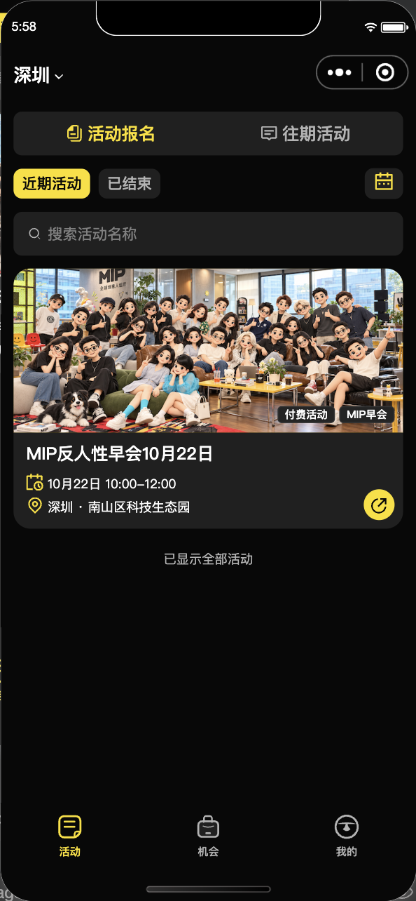

2026-10-20 · 原生小程序 · 生产服务只读验证
没有修改数据库、云函数配置、资费或服务端权限。管理员入口、失败重试和业务提交仍按真实服务端状态校验。
| 页面 | 修改前 | 修改后 |
|---|---|---|
| 设置 | 1410ms | 200ms |
| 订单 | 5974ms | 2715ms |
| 活动详情 | 1872ms | 1745ms |
| 活动列表 | 495ms | 554ms |
| 报名页 | 未采样 | 1090ms |
这些是同机开发工具、生产只读、顺序采样的观测，缓存和冷启动条件没有严格控制，不能将差值完全归因于代码，也不能代表真机P95。订单账号为空列表；非空合同、草稿与字段测试另行验证。活动列表本次没有观察到提速。
390×844逻辑视口，同一活动、同一分会。通知红点与时间随采样变化，不作逐像素性能判断。

不适用：本轮调整请求、缓存和加载时序，没有重新设计页面。不能用视觉稿证明加载速度。
1.0.6已通过完整门禁并上传生产环境开发版本：小程序1845、后台接口331、后台React258项通过；主包1,766,695字节。公众平台是否已设为体验版仍待回读，不能将CLI上传等同于体验版绑定成功。
手机号、实际报名/支付和手机速度由体验版继续验收。自动化不提交生产报名或订单。